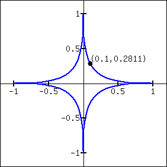

In the previous sections we learned to find the derivative, \(\lz{y}{x}\text{,}\) or \(y'\text{,}\) when \(y\) is given explicitly as a function of \(x\text{.}\) That is, if we know \(y=f(x)\) for some function \(f\text{,}\) we can find \(y'\text{.}\) For example, given \(y=3x^2-7\text{,}\) we can easily find \(y'=6x\text{.}\) (Here we explicitly state how \(y\) depends on \(x\text{.}\) Knowing \(x\text{,}\) we can directly find \(y\text{.}\))
Sometimes the relationship between \(y\) and \(x\) is not explicit; rather, it is implicit. For instance, we might know that \(x^2-y=4\text{.}\) This equality defines a relationship between \(x\) and \(y\text{;}\) if we know \(x\text{,}\) we could figure out \(y\text{.}\) Can we still find \(y'\text{?}\) In this case, sure; we solve for \(y\) to get \(y=x^2-4\) (hence we now know \(y\) explicitly) and then differentiate to get \(y'=2x\text{.}\)
Sometimes the implicit relationship between \(x\) and \(y\) is complicated. Suppose we are given \(\sin(y)+y^3=6-x^3\text{.}\) A graph of this implicit relationship is given in Figure 2.6.2. In this case there is absolutely no way to solve for \(y\) in terms of elementary functions. The surprising thing is, however, that we can still find \(y'\) via a process known as implicit differentiation.
Figure2.6.2.A graph of the implicit relationship \(\sin(y)+y^3=6-x^3\)
Subsection2.6.1The method of implicit differentiation
Implicit differentiation is a technique based on the The Chain Rule that is used to find a derivative when the relationship between the variables is given implicitly rather than explicitly (solved for one variable in terms of the other).
We begin by reviewing the Chain Rule. Let \(f\) and \(g\) be functions of \(x\text{.}\) Then
The right hand side is easy; it returns \(-3x^2\text{.}\)
The left hand side requires more consideration. We take the derivative term-by-term. Using the technique derived from Equation (2.6.1) above, we can see that
This equation for \(y'\) probably seems unusual for it contains both \(x\) and \(y\) terms. How is it to be used? We'll address that next.
Implicit functions are generally harder to deal with than explicit functions. With an explicit function, given an \(x\) value, we have an explicit formula for computing the corresponding \(y\) value. With an implicit function, one often has to find \(x\) and \(y\) values at the same time that satisfy the equation. It is much easier to demonstrate that a given point satisfies the equation than to actually find such a point.
For instance, we can affirm easily that the point \(\left(\sqrt[3]{6},0\right)\) lies on the graph of the implicit function \(\sin(y) + y^3=6-x^3\text{.}\) Plugging in \(0\) for \(y\text{,}\) we see the left hand side is \(0\text{.}\) Setting \(x=\sqrt[3]6\text{,}\) we see the right hand side is also \(0\text{;}\) the equation is satisfied. The following example finds the equation of the tangent line to this function at this point.
Example2.6.4.Using implicit differentiation to find a tangent line.
Find the equation of the line tangent to the curve of the implicitly defined function \(\sin(y) + y^3=6-x^3\) at the point \(\left(\sqrt[3]6,0\right)\text{.}\)
We find the slope of the tangent line at the point \(\left(\sqrt[3]6,0\right)\) by substituting \(\sqrt[3]6\) for \(x\) and \(0\) for \(y\text{.}\) Thus at the point \(\left(\sqrt[3]6,0\right)\text{,}\) we have the slope as
Therefore the equation of the tangent line to the implicitly defined function \(\sin(y) + y^3=6-x^3\) at the point \(\left(\sqrt[3]{6},0\right)\) is
\begin{equation*}
y = -3\sqrt[3]{36}\left(x-\sqrt[3]{6}\right)+0 \approx -9.91x+18\text{.}
\end{equation*}
The curve and this tangent line are shown in Figure 2.6.5.
Figure2.6.5.The function \(\sin(y) +y^3 = 6-x^3\) and its tangent line at the point \((\sqrt[3]{6},0)\)
This suggests a general method for implicit differentiation. For the steps below assume \(y\) is a function of \(x\text{.}\)
Take the derivative of each term in the equation. Treat the \(x\) terms like normal. When taking the derivatives of \(y\) terms, the usual rules apply except that, because of the Chain Rule 2.5.4, we need to multiply each term by \(y'\text{.}\)
Get all the \(y'\) terms on one side of the equal sign and put the remaining terms on the other side.
Factor out \(y'\text{;}\) solve for \(y'\) by dividing.
(Practical Note: when working by hand, it may be beneficial to use the symbol \(\frac{dy}{dx}\) instead of \(y'\text{,}\) as the latter can be easily confused for \(y\) or \(y^1\text{.}\))
Example2.6.6.Using Implicit Differentiation.
Given the implicitly defined function \(y^3+x^2y^4=1+2x\text{,}\) find \(y'\text{.}\)
We will take the implicit derivatives term by term. The derivative of \(y^3\) is \(3y^2y'\text{.}\)
The second term, \(x^2y^4\text{,}\) is a little tricky. It requires the Product Rule as it is the product of two functions of \(x\text{:}\)\(x^2\) and \(y^4\text{.}\) Its derivative is \(x^2(4y^3y') + 2xy^4\text{.}\) The first part of this expression requires a \(y'\) because we are taking the derivative of a \(y\) term. The second part does not require it because we are taking the derivative of \(x^2\text{.}\)
The derivative of the right hand side is easily found to be \(2\text{.}\) In all, we get:
To confirm the validity of our work, let's find the equation of a tangent line to this function at a point. It is easy to confirm that the point \((0,1)\) lies on the graph of this function. At this point, \(y' = 2/3\text{.}\) So the equation of the tangent line is \(y = 2/3(x-0)+1\text{.}\) The function and its tangent line are graphed in Figure 2.6.7.
Figure2.6.7.A graph of the implicitly defined function \(y^3+x^2y^4=1+2x\) along with its tangent line at the point \((0,1)\)
Notice how our curve looks much different than for functions we have seen. For one, it fails the vertical line test, and so the complete curve is not truly representing \(y\) as a function of \(x\text{.}\) But when we indicate we are interested in the derivative at \((0,1)\text{,}\) we are indicating that we want the function defined by the small portion of the curve that passes through \((0,1)\text{,}\) and that small portion does pass the vertical line test. Such functions are important in many areas of mathematics, so developing tools to deal with them is also important.
Example2.6.8.Using Implicit Differentiation.
Given the implicitly defined function \(\sin\mathopen{}\left(x^2y^2\right)\mathclose{}+y^3=x+y\text{,}\) find \(y'\text{.}\)
We now have to be careful to properly solve for \(y'\text{,}\) particularly because of the product on the left. It is best to multiply out the product. Doing this, we get
A graph of this implicit function is given in Figure 2.6.9.
Figure2.6.9.A graph of the implicitly defined curve \(\sin\mathopen{}\left(x^2y^2\right)\mathclose{}+y^3=x+y\)
It is easy to verify that the points \((0,0)\text{,}\)\((0,1)\) and \((0,-1)\) all lie on the graph. We can find the slopes of the tangent lines at each of these points using our formula for \(y'\text{.}\)
At \((0,0)\text{,}\) the slope is \(-1\text{.}\)
At \((0,1)\text{,}\) the slope is \(1/2\text{.}\)
At \((0,-1)\text{,}\) the slope is also \(1/2\text{.}\)
The tangent lines have been added to the graph of the function in Figure 2.6.10.
Figure2.6.10.A graph of the implicitly defined curve \(\sin\mathopen{}\left(x^2y^2\right)\mathclose{}+y^3=x+y\) and certain tangent lines
Quite a few “famous” curves have equations that are given implicitly. We can use implicit differentiation to find the slope at various points on those curves. We investigate two such curves in the next examples.
Example2.6.11.Finding slopes of tangent lines to a circle.
Find the slope of the tangent line to the circle \(x^2+y^2=1\) at the point \(\left(1/2, \sqrt{3}/2\right)\text{.}\)
This is a clever formula. Recall that the slope of the line through the origin and the point \((x,y)\) on the circle will be \(y/x\text{.}\) We have found that the slope of the tangent line to the circle at that point is the opposite reciprocal of \(y/x\text{,}\) namely, \(-x/y\text{.}\) Hence these two lines are always perpendicular.
At the point \(\left(1/2, \sqrt{3}/2\right)\text{,}\) we have the tangent line's slope as
A graph of the circle and its tangent line at \(\left(1/2,\sqrt{3}/2\right)\) is given in Figure 2.6.12, along with a thin dashed line from the origin that is perpendicular to the tangent line. (It turns out that all normal lines to a circle pass through the center of the circle.)
Figure2.6.12.The unit circle with its tangent line at \((1/2,\sqrt{3}/2)\)
This section has shown how to find the derivatives of implicitly defined functions, whose graphs include a wide variety of interesting and unusual shapes. Implicit differentiation can also be used to further our understanding of “regular” differentiation.
One hole in our current understanding of derivatives is this: what is the derivative of the square root function? That is,
We allude to a possible solution, as we can write the square root function as a power function with a rational (or, fractional) power. We are then tempted to apply the Power Rule with Integer Exponents and obtain
Let \(y = x^{m/n}\text{,}\) where \(m\) and \(n\) are integers with no common factors (so \(m=2\) and \(n=5\) is fine, but \(m=2\) and \(n=4\) is not). We can rewrite this explicit function implicitly as \(y^n = x^m\text{.}\) Now apply implicit differentiation.
The above derivation is the key to the proof extending the Power Rule with Integer Exponents to rational powers. Using limits, we can extend this once more to include all powers, including irrational (even transcendental!) powers, giving the following theorem.
Theorem2.6.13.Power Rule for Differentiation.
Let \(f(x) = x^n\text{,}\) where \(n\neq 0\) is a real number. Then \(f\) is differentiable on its domain, except possibly at \(x=0\text{,}\) and \(\fp(x) = n\cdot x^{n-1}\text{.}\)
This theorem allows us to say the derivative of \(x^\pi\) is \(\pi x^{\pi -1}\text{.}\)
We now apply this final version of the Power Rule for Differentiation in the next example, the second investigation of a “famous” curve.
Example2.6.14.Using the Power Rule.
Find the slope of \(x^{2/3}+y^{2/3}=8\) at the point \((8,8)\text{.}\)
This is a particularly interesting curve called an astroid. It is the shape traced out by a point on the edge of a circle that is rolling around inside of a larger circle, as shown in Figure 2.6.15.
Figure2.6.15.An astroid, traced out by a point on the smaller circle as it rolls inside the larger circle
To find the slope of the astroid at the point \((8,8)\text{,}\) we take the derivative implicitly.
Plugging in \(x=8\) and \(y=8\text{,}\) we get a slope of \(-1\text{.}\) The astroid, with its tangent line at \((8,8)\text{,}\) is shown in Figure 2.6.16.
Figure2.6.16.An astroid with a tangent line
Subsection2.6.2Implicit Differentiation and the Second Derivative
We can use implicit differentiation to find higher order derivatives. In theory, this is simple: first find \(\lz{y}{x}\text{,}\) then take its derivative with respect to \(x\text{.}\) In practice, it is not hard, but it often requires a bit of algebra. We demonstrate this in an example.
Example2.6.17.Finding the second derivative.
Given \(x^2+y^2=1\text{,}\) find \(\lzn{2}{y}{x} = y''\text{.}\)
We found that \(y' = \lz{y}{x} = -x/y\) in Example 2.6.11. To find \(y''\text{,}\) we apply implicit differentiation to \(y'\text{.}\)
\begin{align*}
y'' \amp = \lzoo{x}{y'}\\
\amp = \lzoo{x}{-\frac{x}{y}}\amp\amp\text{(Now use the Quotient Rule.)}\\
\amp = -\frac{y\cdot1 - x(y')}{y^2}\amp\amp\text{replace }y'\text{ with }-x/y\text{:}\\
\amp = -\frac{y-x(-x/y)}{y^2}\\
\amp = -\frac{y+x^2/y}{y^2}\text{.}
\end{align*}
While this is not a particularly simple expression, it is usable. We can see that \(y'' \gt 0\) when \(y\lt 0\) and \(y''\lt 0\) when \(y \gt 0\text{.}\) In Section 3.4, we will see how this relates to the shape of the graph.
Also, if we remember that we are only considering points on the curve \(x^2+y^2=1\text{,}\) then we know that \(x^2=1-y^2\text{.}\) So we can replace the \(x^2\) in the expression for \(y''\) to get
which is a simpler expression. Recognizing when simplifications like this are possible is not always easy.
Subsection2.6.3Logarithmic Differentiation
Consider the function \(y=x^x\text{;}\) it is graphed in Figure 2.6.18. It is well-defined for \(x \gt 0\) and we might be interested in finding equations of lines tangent and normal to its graph. How do we take its derivative?
Figure2.6.18.A plot of \(y=x^x\)
The function is not a power function: it has a “power” of \(x\text{,}\) not a constant. It is not an exponential function either: it has a “base” of \(x\text{,}\) not a constant.
A differentiation technique known as logarithmic differentiation becomes useful here. The basic principle is this: take the natural log of both sides of an equation \(y=f(x)\text{,}\) then use implicit differentiation to find \(y'\text{.}\) We demonstrate this in the following example.
Example2.6.19.Using Logarithmic Differentiation.
Given \(y=x^x\text{,}\) use logarithmic differentiation to find \(y'\text{.}\)
Figure2.6.20.Two approaches to solving Example 2.6.19. In the first video, taking the log of both sides. In the second, using the inverse relationship \(e^{\ln(x)}=x\text{.}\)
As suggested above, we start by taking the natural log of both sides then applying implicit differentiation.
To “test” our answer, let's use it to find the equation of the tangent line at \(x=1.5\text{.}\) The point on the graph our tangent line must pass through is \(\left(1.5, 1.5^{1.5}\right) \approx (1.5, 1.837)\text{.}\) Using the equation for \(y'\text{,}\) we find the slope as
Thus the equation of the tangent line is (approximately) \(y \approx 2.582(x-1.5)+1.837\text{.}\)Figure 2.6.21 graphs \(y=x^x\) along with this tangent line.
Figure2.6.21.A graph of \(y=x^x\) and its tangent line at \(x=1.5\)
We would not have been able to compute the derivative of the function in Example 2.6.19 without logarithmic differentiation. But the method is also useful in cases where the product and quotient rules could be used, but logarithmic differentiation is simpler. The video in Figure 2.6.22 provides such an example.
Figure2.6.22.Using logarithmic differentiation
Implicit differentiation proves to be useful as it allows us to find the instantaneous rates of change of a variety of functions. In particular, it extended the Power Rule for Differentiation to rational exponents, which we then extended to all real numbers. In Section 2.7, implicit differentiation will be used to find the derivatives of inverse functions, such as \(y=\sin^{-1}(x)\text{.}\)
Exercises2.6.4Exercises
Terms and Concepts
1.
In your own words, explain the difference between implicit functions and explicit functions.
2.
Implicit differentiation is based on what other differentiation rule?
3.
True
False
Implicit differentiation can be used to find the derivative of \(y=\sqrt{x}\text{.}\)
4.
True
False
Implicit differentiation can be used to find the derivative of \(y=x^{3/4}\text{.}\)
Show that \(\lz{y}{x}\) is the same for each of the following implicitly defined functions.
\(\displaystyle xy=1\)
\(\displaystyle x^2y^2=1\)
\(\displaystyle \sin(xy) = 1\)
\(\displaystyle \ln(xy) =1\)
Exercise Group.
Find the equation of the tangent line to the graph of the implicitly defined function at the indicated points. As a visual aid, the function is graphed.
27.
On the curve \(x^{2/5}+y^{2/5} = 1\text{,}\) find the equation of the tangent line at:
\(\displaystyle (1,0)\)
\((0.1,0.2811)\) (which does not exactly lie on the curve, but is very close)

28.
On the curve \(x^{4}+y^{4} = 1\text{,}\) find the equation of the tangent line at:
An implicitly defined function is given. Find \(\lzn{2}{y}{x}\text{.}\) Note: these are the same functions used in Exercises 2.6.4.13 through 2.6.4.16.
33.
\(x^4+y^2+y=7\)
34.
\(x^{2/5}+y^{2/5}=1\)
35.
\(\cos(x)+\sin(y)=1\)
36.
\(\dfrac{x}{y}=10\)
Exercise Group.
Use logarithmic differentiation to find \(\lz{y}{x}\text{,}\) then find the equation of the tangent line at the indicated \(x\)-value.